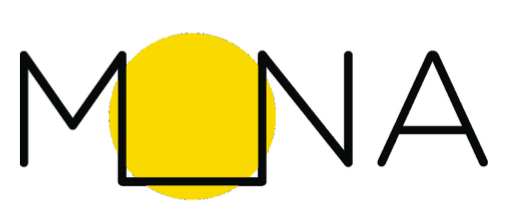

Le projet Mona est une application mobile qui permet de découvrir des oeuvres d'art public à Montréal. L'application utilise la géolocalisation pour permettre à l'utilisateur de découvrir des oeuvres d'art à proximité et de les ajouter à sa collection. En IFT 3150, je travaille comme développeur front-end avec la Maison MONA. En premier, je vais me familiariser avec le code existant et ensuite de travailler avec le reste de l'équipe pour améliorer/embellir l'interface du serveur.
Première rencontre avec Lena et Mariama. On s'est fait connaissance et Lena nous a
présenté Maison MONA et l'application MONA. Je vais travailler sur le côté front end de l'app,
et Mariama va faire plus de travail côté données. J'ai déjà téléchargé l'application et
j'ai pu uploader deux photos d'œuvres d'art public à Montréal. J'ai aussi contacté Christian
pour lui demander de l'aide pour installer le projet sur mon ordinateur, et donc on se rencontre
mercredi en ligne pour qu'il m'aide avec l'installation du code base. J'ai aussi téléchargé
l'application Element pour communiquer avec les autres membres de l'équipe. Je ferai des
changements de design sur ce rapport aussi au fur et à mesure que je travaille sur le projet.
Petite suggestion: Peut-on nous donner la chance à l'utilisateur d'ajouter ses propres
retrouvailles (des trucs qui ne sont pas déjà dans l'app)?
Je pense que ça pourrait être une bonne idée! (dependamment de combien de travail ça demande
de faire ça, bien sûr)
Rencontre avec l'équipe de développement. On a discuté des fonctionnalités à implémenter et des améliorations à apporter à l'interface utilisateur.
Après notre rencontre, Christian m'a aidé à installer le code base sur mon ordinateur.
On n'a pas pu installer la version Linux (code incompatible avec windows), fixé par Christian.
J'ai vu les changements faits par Christian au serveur pour que ça marche sur windows, donc
il fallait juste nelever les ";" des noms de fichiers.
Je vais aussi vérifier comment mettre le rapport en ligne et envoyer le lien à l'équipe sur Element.
Durant la rencontre du jeudi 14 Mai, la plupart des tâches discutées ont été données à Mariama.
Ce qui me concerne sera plus discuté Lundi prochain.
J'ai demandé aussi à Frank de faire comme un tutoriel de GitHub ensemble (pour se motiver)
pour mieux comprendre comment l'utiliser. J'ai pas encore reçu de réponse, et donc
j'ai déjà essayé de l'utiliser et donc j'ai eu une petite idée de comment ça marche,
mais je suis encore down pour faire un tutoriel ensemble (ça sera plus fun).
Update: J'ai fait un petit tour sur github tout seul, et j'ai réussi à faire
un commit et un push. Je suis content de moi!
J'ai pu mettre le rapport en ligne aussi, et je vais envoyer le lien à l'équipe sur Element.
Pas de réponse de Frank. J'ai fait github tout seul, j'éspère que c'est pas mal. On a discuté des trucs à améliorer dans l'application, c'est réduit à trois options:
Les badges ont finalement été retenus comme priorité. Tâche n°1 : développer le système de badges. J'attends l'accès au Figma pour pouvoir commencer à travailler sur les designs des badges. J'ai aussi demandé à Christian si on a besoin de faire une session de code ensemble pour qu'on le fasse.